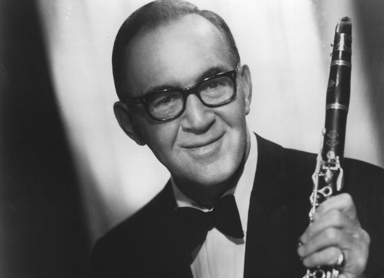

베니 굿맨
’스윙의 왕(King of Swing)’ 베니 굿맨(Benny Goodman)은 미국의 클라리넷 연주자, 1935년 대공황의 터널을 지나온 미국 사회를 들뜨게 한 ’스윙 열풍’을 주도한 인물이다.
그는 당시까지 흑인의 전유물로만 인식되던 재즈를 미국 주류 백인계층에까지 파급시키며 재즈의 대중화에 일익한다.
그의 음악은 비슷한 시기 인기를 얻었던 듀크 엘링턴이나 카운트 베이시 밴드들보다 악보에 근거한 정확한 연주를 했지만 즉흥성에 있어서는 다소 떨어졌다.
하지만 그는 청감(聽感)이 빼어났고, 열정과 즐거움이 가득한 재즈 연주곡들을 많이 남기며 미국에서 가장 인기 있는 스윙 연주자로 남아있다.
유대계 미국인 집안의 가난한 양복점 자제로 자란 그는 12세 시절이던 1921년에 클라리네티스트 데뷔하였다.
1927년에 벤 폴라크 악단을 시초로 많은 악단과 스튜디오 악단에서 일을 하였으며, 취입에도 활동이 많았다.
1934년에 스스로 악단을 결성하여 라디오 쇼의 레츠 댄스로 큰 반향을 부른 이래 그의 연주스타일은 미국 전역에 알려져 스윙의 왕이라고 불리기도 하였다.
그 후 스윙은 재즈 사상 큰 발전을 이룩하게 되었다. 한편, 그의 충실한 악단은 많은 스타 플레이어를 확보하고 그 뛰어난 픽업 멤버의 소편성 콤보도 고도한 연주로 호평을 받았다.
그의 비범한 재능은 고전적 분야에도 미쳐 많은 클라리넷 작품을 연주하였다. 그러나, 그는 1950년대부터 이어지고 있는 새로운 재즈의 흐름에서 멀어지게 되었다.
1938년 1월 16일, 스윙 밴드로선 물론이며 대중 음악인으로선 처음으로 뉴욕 카네기 홀 무대에 서며 그의 인기는 정점에 다다랐다.
이전까지 바(Bar)나 무도장에서만 연주되던 재즈는 이와 함께 콘서트 장에서 듣는 ’지적이고 고상한’ 음악으로 발전해가기 시작한다.
공연 실황은 그의 대표작이기도 한 <Live at The Carnegie Hall>(1938)로도 출시,
’Stompin’ at the Savoy’, ’Sing, sing, sing’과 같은 스윙 시대를 대표하는 고전들을 들려준다.
특히 ’Sing, sing, sing’에서 폭발적인 드러밍을 선보인 진 크루파는 이 앨범을 통해 일약 재즈 스타로 부상한다.
같은 해 콜럼비아 레코드사에서 알게 된 프로듀서 존 하몬드(John Hammond)가 기획한 미국 대중 음악을 집대성한 고전
<From Spiritual to Swing>(1938)에서도 스윙을 대표하는 연주자로 참여한다.
베니 굿맨 밴드엔 재즈 역사에 길이 남을 걸출한 재즈 뮤지션들이 거쳐갔다.트럼페터 해리 제임스(Harry James), 지기 엘만(Ziggy Elman),
비브라폰주자 라이오넬 햄프턴(Rionel hampton), 드러머 진 쿠르파(Gene Krupa)가 그의 밴드 고정 멤버들이였고,
밴드에서 피아노와 전체 편곡을 담당했던 비운의 재즈 대가 플래처 핸더슨(Fletcher Henderson), 쿠티 윌리엄스(Cootie Williams),
찰리 크리스챤, 테디 윌슨도 그의 밴드를 거쳐갔다.
이 황금시대에 녹음된 굿맨의 연주는 한마딜로 무엇이든 다 좋다고 할 수 있지만, 젋은 재주꾼 에디 소터가 굿맨을 위해 편곡한 곡을 연주한 레코드에는
특유의 참신함이 있어 기존의 '스윙 황제' 노선과는 다른 풋풋한 매력을 느낄 수 있다. 즉 굿맨의 달콤하고 녹작지근한 자짉과 소터의 다소 딱딱하고 지적인 분위기가
묘하게 융화되어 고급스러우면서도 오락성 풍부한 음악을 창조해낸 것이다.
굿맨도 소터의 의욕적인 편곡에 작극을 받았을 것이다. 예를 들면 <Moonlighht on the Ganges>에서 굿맨의 클라리넷 솔로는
상당이 첨예하고 모던한 색체를 띠고 있으며, 거기에는 '그저 달콤하고 오락적인 재즈라고 평가받고 싶지 않다'는 기백같은 것이 담겨 있다.